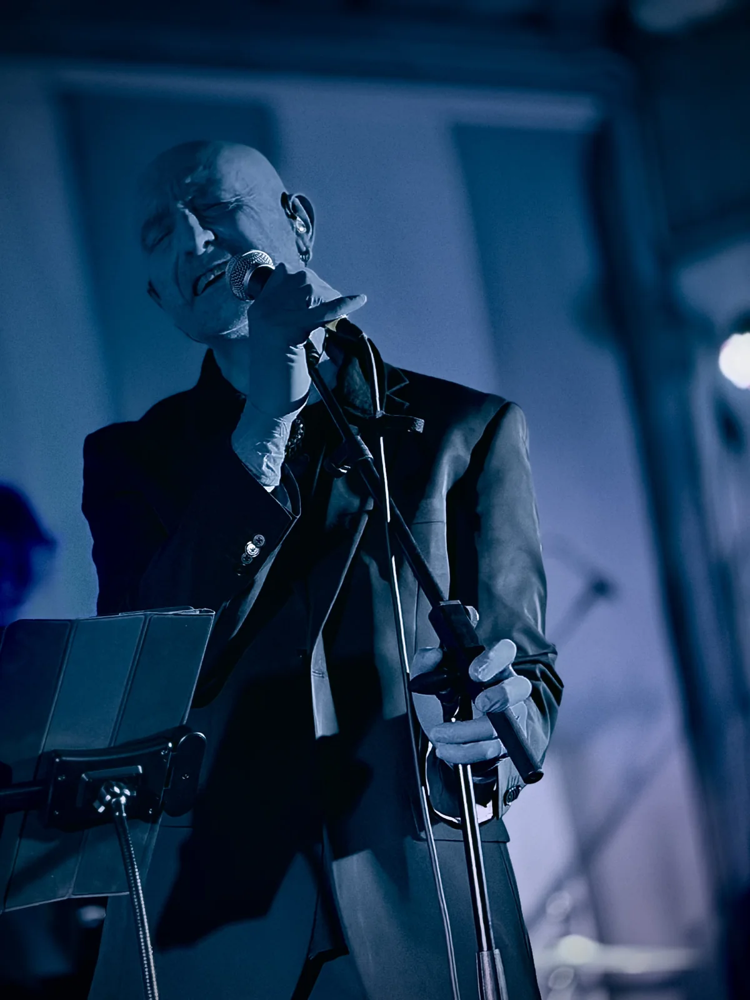
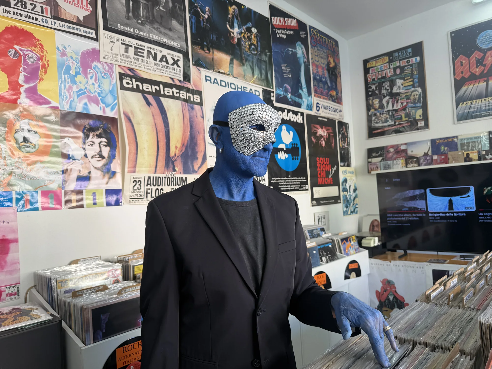

Un viaggio cosmico
Nihil Land è un concept album che trabocca di interrogativi, un viaggio cosmico che si rispecchia in una inappagabile ricerca interiore, toccando temi universali con una pluralità di stili e riferimenti.
Erede al trono di un regno senza terra, l'alieno Nihil giunge sul nostro pianeta dopo un lungo peregrinare cosmico e qui scopre la musica, veicolo eletto per condividere la sua storia e la sua ricerca: e così la fuga da Nihil Land, la nostalgia di un'età perduta e di amori passati, il costante oscillare del desiderio tra il vuoto e la pienezza, la solitudine e l'abbraccio, prendono consistenza sonora in una preziosa galleria di canzoni.
Si passa dal rock energico e dalle sonorità piene di Symphony in Minor agli eterei arpeggi di chitarra di Un sogno sospeso, dalla dance di La via di Sisifo al blues "atipico" e indolente di Nient'altro da aggiungere; per finire con la title-track Nihil Land, che ricompone questo vasto universo in una chiusura semplice e commovente.
Nihil Land parla a noi e di noi, e ci mostra con gli occhi di un alieno la complessità del nostro essere umani, estranei alla Terra eppure inscindibili da essa, alla ricerca dell'amore, ma anche della solitudine.



Fotografie: IANUA.
Nascita del progetto
Nel 2022 Daniele lascia Roma per tornare a vivere nella sua terra natia, la Versilia.
Qui, dopo oltre trent'anni di distacco, incontra di nuovo il suo vecchio pianoforte, parcheggiato a casa dei suoi genitori e lo trasferisce nella sua casa in collina. Lì, tra la solitudine e il mare, concepisce quello che dopo qualche anno prenderà forma definitiva diventando il concept album Nihil Land.
Nihil è il niente, il luogo migliore dove poter vivere, il vuoto che salva dal pieno forzato, il giardino in cui ritrovare se stessi. Chi ha detto che il vuoto è uno spazio di negazione? Tutt'altro, il nulla è il luogo in cui tutto è possibile.
Dal vivo
Il live è pensato per luoghi raccolti, dove al massimo possano ascoltarlo un centinaio di persone. È disponibile anche nella sua versione acustica con voce e pianoforte.
- Mixerminimo 16 canali
- Monitor5 monitor da palco
- DI box5
- PAadeguato alla sala
- Corrente220V sul palco
- Palcominimo 6 × 4 m
- Soundcheckminimo 45 minuti